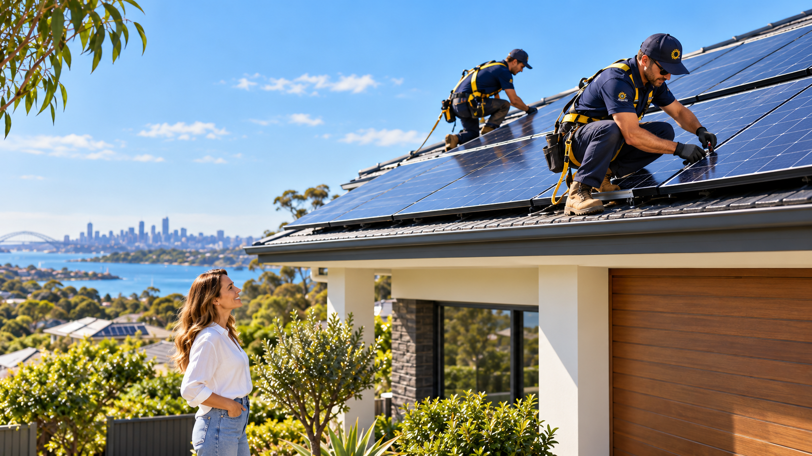
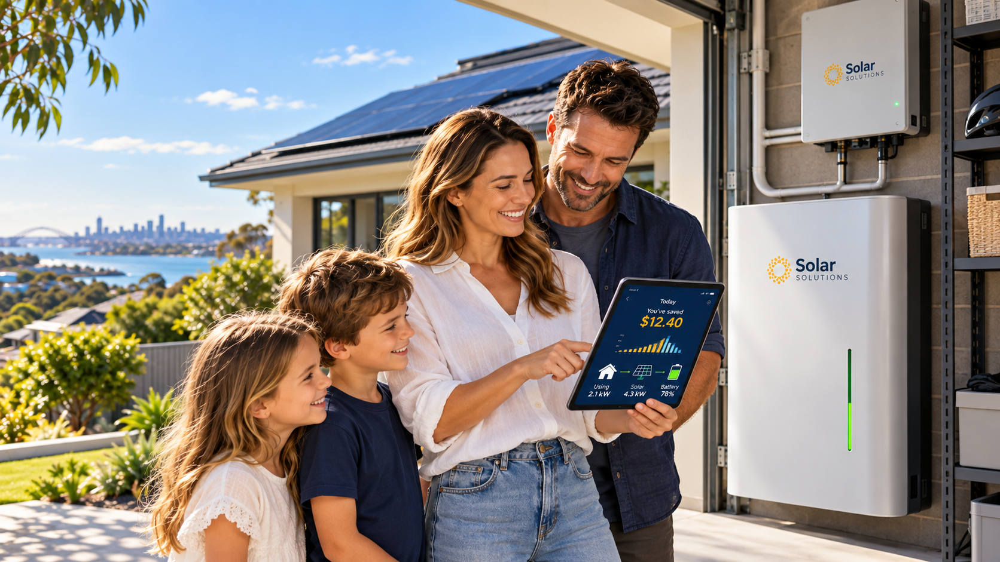
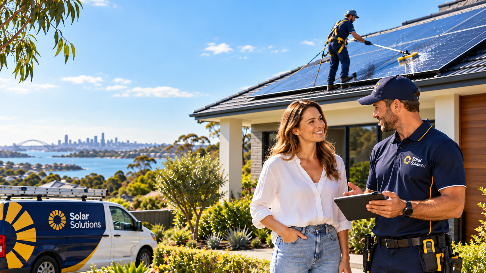

Residential Solar
Solar systems designed around your home, roof and energy needs.
Solar panels, battery storage and smart energy solutions for NSW homes and businesses. Practical advice. Thoughtful system design. More control over your energy.
For NSW homesEveryday energy solutions
For local businessesCommercial energy planning
Store more sunshineHome battery options
Support beyond installRepairs, care & upgrades
Everything from your first solar system to battery storage, EV charging and ongoing solar care — all explored in one place.
Let's talk about your project
Solar systems designed around your home, roof and energy needs.
Considered solar options for shops, warehouses and business premises.

Explore ways to store daytime solar energy for later use.
Improve an existing solar setup with suitable system components.

Help with faults, underperforming equipment and troubleshooting.
System health checks, servicing and ongoing solar care.
There is more to choosing solar than selecting panels. We help you consider the whole picture — your building, electricity usage, future plans and ongoing care.
Whether you're comparing solar for the first time or upgrading an existing system, here's how a project can take shape.
Tell us about your home or business and what you want from solar.
Consider your site, power usage, system size and equipment choices.
Review the proposed installation approach, quote and next steps.
Start using your system and explore monitoring and ongoing care.
Pairing rooftop solar with battery storage may help you use more of the energy you generate. We can discuss household usage, storage capacity, compatibility and whether a battery suits your goals.
From suburban rooftops to commercial buildings and regional properties, solar starts with understanding the site.
Illustrative photography — not a gallery of verified client projects.Before choosing solar, it helps to understand system size, battery storage, available incentives and installation requirements.
Ask a QuestionSystem size depends on electricity consumption, roof orientation, usable roof space, shade, budget and your longer-term plans. Reviewing recent electricity bills is a useful starting point.
A battery can help use solar electricity outside daylight hours, but it isn't the right choice for every property. Suitability depends on usage patterns, tariffs, compatibility and overall costs.
Eligible installations may qualify for federal or NSW schemes, which can change. Any eligibility, value or availability should be confirmed against current official programme rules before accepting a quote.
Often yes, depending on the age, condition, inverter capacity, electrical infrastructure and network requirements. An assessment helps determine the available options.
Share your suburb and postcode when you enquire so service availability for your location can be confirmed.
Tell us a little about your property and the solar solution you're interested in. We'll help you take the next step.
Share your details and we'll help with your enquiry.